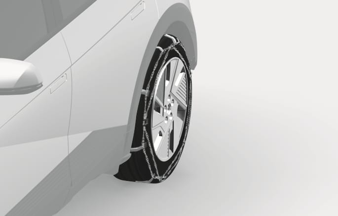
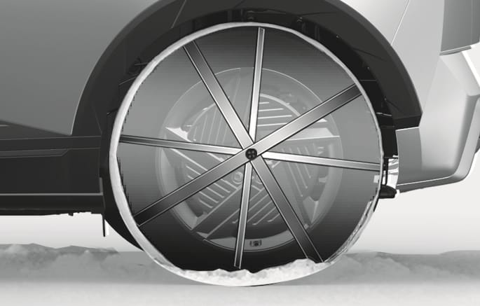

겨울철 운전
-
타이어 체인, 창문 닦기 도구, 성에 제거기, 모래(소금), 안전삼각대, 야전삽, 점프 케이블 등 비상 장비를 차량에 비치하십시오.
-
부동액과 와셔액의 농도를 점검하십시오.
-
배터리와 케이블 상태를 점검하십시오. 날씨가 추우면 배터리 성능이 저하되어 시동이 걸리지 않을 수 있습니다.
-
날씨가 추울 때는 다음과 같이 추가적인 차량 점검 및 주의가 필요합니다.
-
차량 하부에 얼음이 언 경우 부품이 손상되지 않도록 주의하며 제거하십시오.
-
시동을 걸고 각종 페달이 정상적으로 움직이는지 확인하십시오.
-
앞뒤 유리의 얼음과 눈을 제거하십시오.
-
와이퍼 블레이드가 유리에 얼어붙지 않았는지 확인하십시오.
-
-
품질과 성능을 만족하는 부동액과 물을 적정 비율로 혼합한 냉각수를 사용하십시오('냉각수 점검하기' 참고). 순정 부동액은 품질과 성능을 당사가 보증하는 부동액입니다.
냉각수 내 부동액의 비율이 너무 높거나 낮으면 냉각 효과가 저하되거나 냉각수가 얼 수 있습니다.
-
앞유리에 많은 눈이 쌓이면 일시적으로 와이퍼 작동이 멈출 수 있습니다. 앞유리 위아래 및 와이퍼 주변에 쌓인 눈을 제거한 후 와이퍼를 작동하십시오.
와이퍼 작동이 멈추는 현상은 눈을 제거하지 않고 와이퍼를 계속 작동할 때 발생할 수 있는 와이퍼 파손을 방지하기 위한 기능으로, 고장이 아닙니다.
-
날씨가 매우 추울 때는 주차 브레이크를 체결하지 마십시오. 주차 브레이크 장치가 얼어 해제되지 않을 수 있습니다. 평지에서 'P'(주차)로 변속하고 주차한 후 바퀴에 고임목을 설치하십시오.
-
차량의 앞부분이 바람이 불어오는 방향 반대쪽을 향하도록 주차하십시오.
-
도어가 얼어서 열리지 않는 경우, 도어 주위를 가볍게 두드리거나 따뜻한 물을 부어 얼음을 녹이고 물기를 제거하십시오. 차에 묻은 물을 방치하면 다시 얼 수 있습니다.
-
기온이 7℃ 이하이거나 눈길 또는 빙판길을 주행할 때는 스노 타이어 또는 규격에 맞는 타이어 체인을 장착하고 급출발, 급가속, 급제동을 피하십시오.
-
도로 조건에 주의하며 주행하십시오. 동일 지역 내에서도 음지와 양지의 도로 조건은 서로 다릅니다.
-
내리막길 주행 시 더욱 안전에 주의하십시오.
-
눈길이나 빙판길에서는 타이어의 접지력이 감소하므로 가속 페달이나 스티어링 휠을 거칠게 조작하지 마십시오.
-
미끄러지기 쉬운 노면에서는 회생 제동량을 급격히 변경하지 마십시오. 타이어가 미끄러져 사고가 발생할 수 있습니다.
-
오르막길에서 정지한 후에는 다시 출발하기 어려울 수 있으므로, 충분한 차간거리를 유지하며 천천히 주행하십시오.
-
표준 타이어와 동일한 사이즈 및 규격의 스노 타이어를 장착하십시오.
-
모든 기상 조건에서 균형 잡힌 조향 성능을 확보하려면 네 바퀴 모두 스노 타이어로 교체하십시오.
-
날씨가 맑은 경우에도 항상 주의하십시오. 건조한 노면에서는 스노 타이어의 마찰력이 일반 타이어에 비해 낮으므로 제동 거리가 늘어날 수 있습니다.
표준 타이어와 규격 또는 형태가 다른 스노 타이어를 장착하지 마십시오. 차량의 안정성 및 조향 성능이 저하될 수 있습니다.
도로 위에서 타이어 체인을 장착하려는 경우, 사고로 인한 재산상의 손실 및 인명피해를 예방하려면 다음 지시를 따르십시오.
-
교통량이 적고 안전한 평지에 비상 경고등을 켜고 정차하십시오.
-
차량 후방에 안전삼각대를 세워 뒤따르는 차량에게 경고하십시오.
-
가급적 타이어 체인 대신 스노 타이어를 장착하십시오. 래디얼 타이어는 옆면이 얇아 금속 체인 사용 중 손상되기 쉽습니다.
-
알루미늄 휠에는 금속 체인을 사용하지 마십시오. 휠이 손상될 수 있습니다.
-
타이어 체인을 사용해야 하는 경우, 차량에 적합한 모비스 순정 용품(두께 12 mm 이하 와이어 체인 또는 오토삭 직물형 체인)만을 사용하십시오.
-
타이어 체인을 장착하기 전에 정확한 사용 방법을 숙지하고, 제작사에서 제공하는 설명서에 따라 차체 손상을 피할 수 있는 방법으로 장착하십시오.
-
규격에 맞지 않는 타이어 체인을 설치하거나 설치 방법이 잘못된 경우 차량의 조향성 및 안정성이 감소할 수 있으며, 주변 부품과의 간섭으로 인해 차량이나 타이어 체인이 손상될 수 있습니다.
와이어 체인
2C_TireChain
오토삭 직물형 체인
2C_TireChain_2
이 차량은 뒷바퀴가 구동되는 후륜 구동 차량입니다. 타이어 체인을 장착할 때는 반드시 뒷바퀴에 장착하십시오.
-
19 인치: 와이어 체인 두께 12 mm 이하
-
20 인치: 오토삭 직물형 체인
-
타이어 체인을 장착하면 차량의 조향 성능이 저하될 수 있으므로 주의하십시오.
-
타이어 체인을 장착한 상태로 도로 위의 돌출부나 구멍 등 위험한 곳을 지나거나 차량을 과격하게 조향하지 마십시오. 차량이 심하게 흔들리거나 손상될 수 있습니다.
-
타이어 체인을 장착한 후 저속으로 0.5-1 km 정도 주행하며 체인이 바르게 설치되었는지 확인하십시오.
-
차체나 타이어 주변 부품에 체인이 닿는 소리가 들리는 경우 즉시 차량을 멈추고 체인을 다시 장착하십시오.
-
타이어 체인이 느슨한 경우, 체인이 타이어 안쪽으로 당겨지도록 조정한 후 다시 장착하십시오.
-
-
타이어 체인 장착 중에는 제작사에서 추천하는 규정 속도 또는 30 km/h 이하로만 주행하십시오.
-
타이어 체인이 손상되는 것을 방지하려면 눈이 없는 도로를 주행하기 전에 타이어 체인을 분리하십시오.